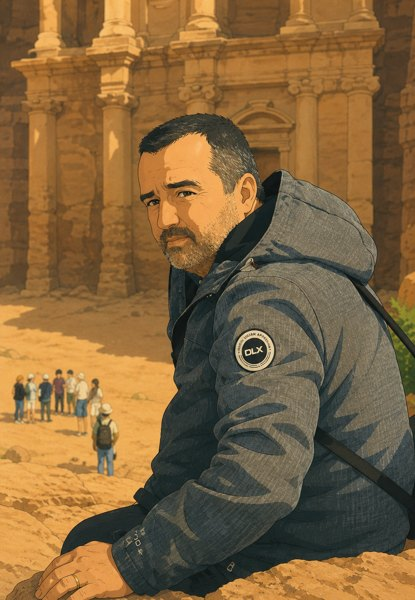

O mně
O mně
Jmenuju se Dan.

Nejsem profesionální cestovatel. Neodjíždím na půl roku s batohem a nežiju z psaní o cestování. Jezdím na čtyři dny do italského města a vracím se do práce.
Cestuju po vlastní ose, bez cestovky, a skoro vždycky mimo sezónu — kvůli počtu lidí i kvůli cenám. Létám z letišť, která má Ostravák blíž než Prahu: Katowice, Krakov, Vídeň, Bratislava. To samo o sobě mění, kam se vyplatí letět a za kolik.
Za sebou mám něco přes padesát navštívených zemí a patnáct let poznámek. Po každé cestě si sednu a zapíšu, co fungovalo a co ne. Tenhle web je z těch zápisků.
Proč tu u každé ceny stojí rok
Protože zastaralá cena bez data je horší než žádná.
Termály na Azorech zdražily za tři roky na dvojnásobek. Artecard v Neapoli stojí dnes o devět eur víc než při mé první návštěvě. Lístek na Koloseum se zdražil taky. Když někde píšu částku, píšu k ní i to, kdy platila — ať víte, čemu můžete věřit a co si musíte ověřit.
Ze stejného důvodu tu najdete i to, co nevyšlo. Vlhký byt v Catanii, nejhorší snídaně, jakou jsem kdy na hotelu zažil, celý den zahozený kvůli úternímu zavíracímu dni. Bez toho by to nebyl cestopis, ale reklama.
Kdo je Jarvis
Na několika místech tady narazíte na Jarvise. Tak říkám umělé inteligenci, se kterou plánuju cesty a se kterou vznikl i tenhle web. Jméno jsem si vypůjčil z Iron Mana — Jarvis je AI asistent, kterého tam má Tony Stark.
Není to žádná zvláštní aplikace, jsou to běžně dostupné modely. Jak je konkrétně používám, je v článku o AI na cestách.
Jak to mám s penězi
Na webu nejsou reklamy a nemám s nikým placenou spolupráci. Nikdo mi neplatí za to, co tady napíšu, a žádný hotel ani půjčovna o mně předem neví.
Jedinou výjimkou je referenční kód k Airalu v rozcestníku, ze kterého mám tři eura — a píšu to přímo u něj. Kdyby někdy přibyla další, dozvíte se to na stejném místě, ne schované někde v textu.
Napište mi
Jestli něco z toho, co tu je, už neplatí, nebo víte něco lepšího, budu rád, když se ozvete.
d.hulenka@gmail.com